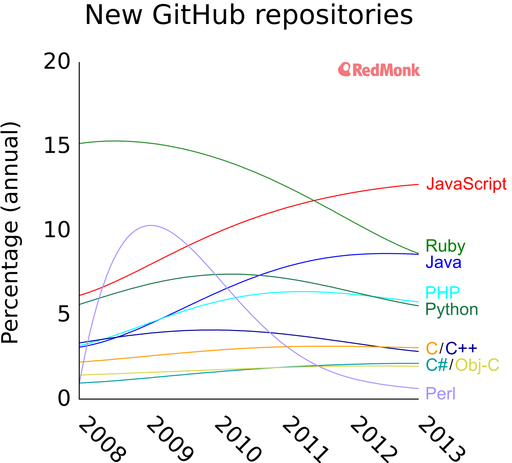

PHP

Agenda
- PHP Srbija
- History of PHP
- PHP statistics
- Composer
- PSR 0,1,2,3...
- Frameworks
- Symfony 2
- Laravel 4
- Zend 2
History of PHP
Created in 1994 by Rasmus Lerdorf - @rasmus
Written in C
Personal Home Page Tools
Timeline
- PHP 1 - 1995
- PHP 1 - 1996
- PHP 3 - 1998 - popularity gained
- PHP 4 - 2000 - wannabe object
- PHP 5 - 2004 - OO support
- PHP 5.3 - 2009
- PHP 5.4 - 2012
- PHP 5.5 - 2013
Andi Gutmans and Zeev Suraski
PHP - Hypertext Preprocessor

WHY PHP???
Hosting
Shared
VPS
Dedicated servers
Heroku
Google App Engine
Azure
Popularity - TIOBE index

Popularity - usage of languages

Popularity - number of developers
More than 5 millions PHP developers worldwide
Up to one thousand PHP developers in Serbia

PHP RENAISSANCE
PHP FIG & PSR
Composer
Best framework
Symfony2
PHP Framework for Web projects
Created by Vladimir Popov / @vladapopov
Symfony info
- Currently in version 2.4.4
- Sensio Labs
- Fabian Potencier
- symfony.com
Why Symfony?
Framework characteristics
- Modular by using Bundles
- MVC structure
- High performance
- Component oriented
- Community driven
- Tuned with PHP
- Great documentation. The Book, Cookbook.
Main differences
- Symfony is a project. Components, Silex, full stack ...
- Used widely
- Huge community and large number of contributors
- Over 2200 ready to use bundles
- Don't reinvent the wheel philosophy, Twig, Doctrine, Monolog ...
Components
- Easy install via composer
- Form
- Dependency Injection
- EventDispatcher
- HttpFoundation
- Console
- Other components
Working environments
- Development
- Production
- Custom
Web Developer Toolbar
Available in dev working environment

Request & Response
How it works?

The Symfony Application Flow
From request to response

Robust
Recommended for large projects
Not very easy to learn
- Steep learning curve
- Good documentation on the other hand